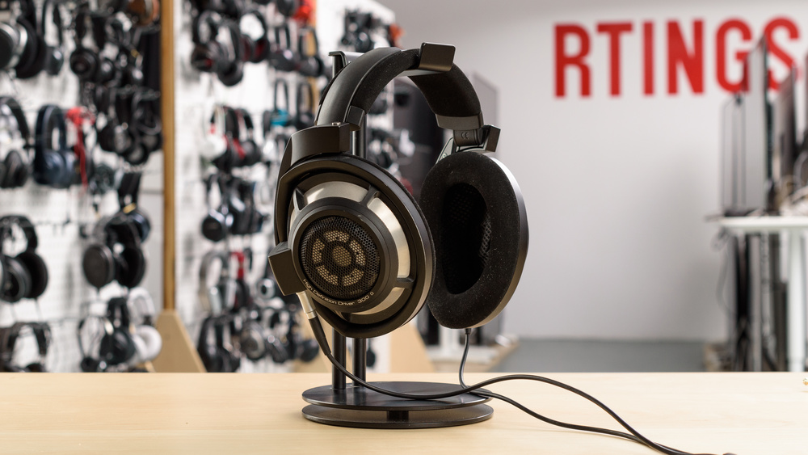
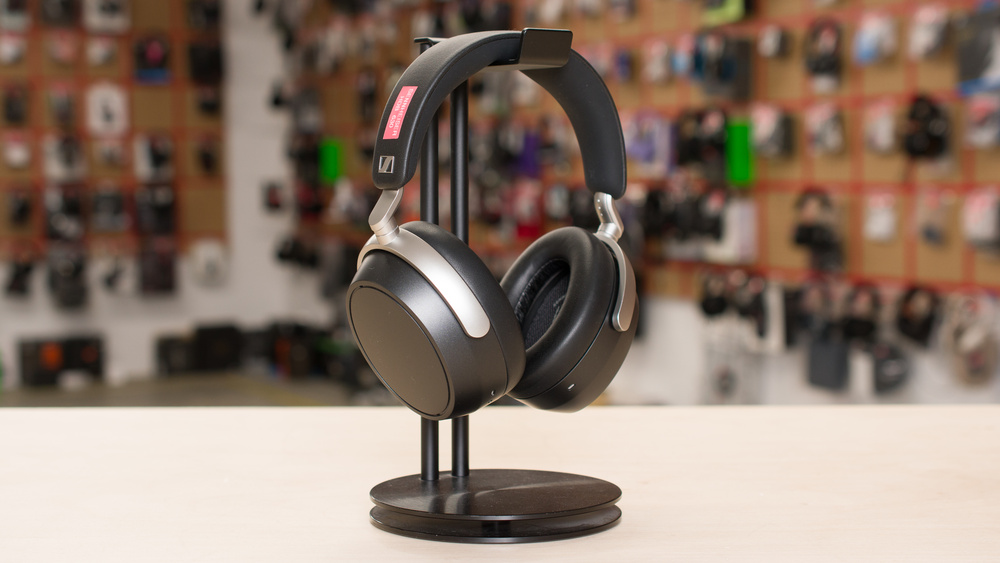
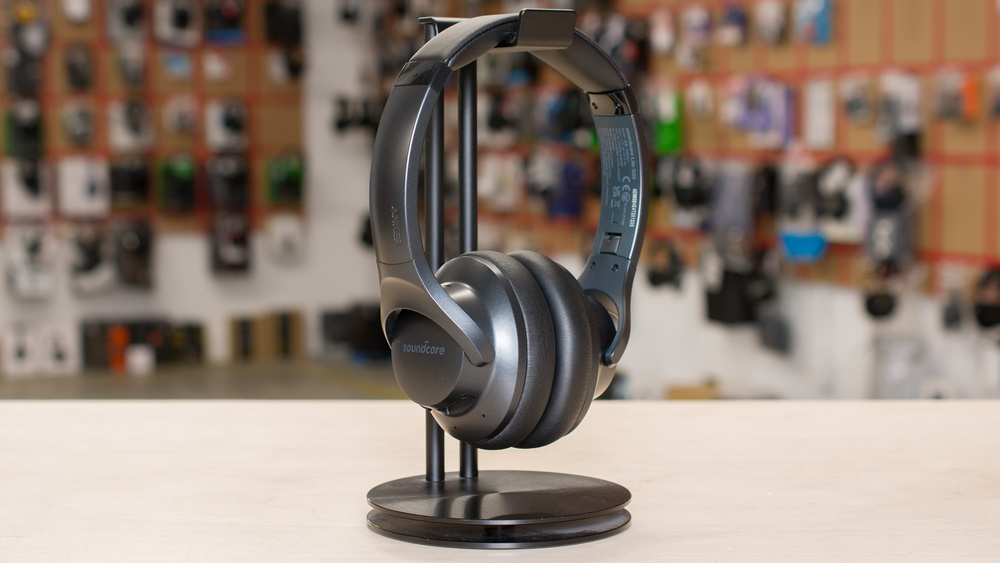

Sennheiser HD 800 S
The Sennheiser HD 800 S are top-of-the-line audiophile headphones. They feature an open-back design, with 56mm Ring Radiator dynamic drivers that deliver a satisfyingly neutral and reference-grade sound. Even though they're quite large, their fit is comfortable enough for long listening sessions. That said, you'll want to consider using a good amp and DAC to get the most out of them, which can be an added cost on top of the high price tag of these cans.

Sennheiser HDB 630
The Sennheiser HDB 630 are premium closed-back, over-ear headphones that blend audiophile-grade sound with modern wireless convenience. They feature active noise cancellation (ANC) and promise up to 60 hours of battery life. They also offer a high-resolution listening experience with support for aptX codecs and up to 24-bit, 96 kHz audio via USB-C or the included BTD 700 Bluetooth USB-C dongle. You also get comprehensive sound shaping through a fully parametric EQ in the Sennheiser Smart Control Plus app, which even offers a crossfeed function.

Anker Soundcore Life Q20
The Anker Soundcore Life Q20 2024 are a refreshed version of the popular Anker Soundcore Life Q20 Wireless, which were released in 2019. This updated version opts to add quality-of-life improvements over drastic feature upgrades. Alongside the new addition of Bluetooth multi-device pairing and USB-C charging, they offer a long, multi-day battery life, a huge variety of EQ presets, and an effective hybrid ANC system: all features that help them punch above their weight (and price point).